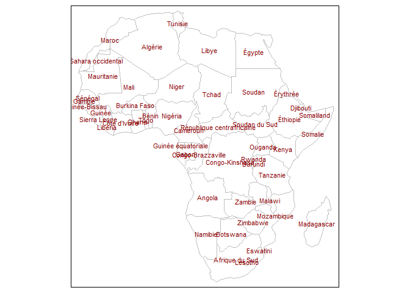

afrilearndata provides small African spatial datasets to help with learning and teaching of spatial techniques and mapping.
The motivation is to provide analysts based in Africa with more easily relateable example datasets. More generally we aim to support the growth of R and mapping in the continent. Part of the afrimapr project providing R building blocks, training and community.
Installation
Install the development version of afrilearndata with:
# install.packages("remotes") # if not already installed
remotes::install_github("afrimapr/afrilearndata")
library(afrilearndata)Datasets
The package contains the following objects
-
africontinentpolygons, continent outline including madagascar -
africountriespolygons, 51 country boundaries -
afrihighwaylines, trans African highway network (100 lines) -
africapitalspoints, 51 capital cities -
afriairportspoints, >3000 African airports -
afripop2020raster grid, population density 2020 from WorldPop aggregated to 20km squares -
afripop2000raster grid, population density 2000 from WorldPop aggregated to 20km squares -
afrilandcoverraster grid, landcover in 2019, categorical, 20km from MODIS
Lazy loading means that the objects should be accessible once library(afrilearndata) is used.
If they are not recognised you can use e.g. data(africountries) to make sure the objects are loaded.
As well as providing the data as R objects the package provides them as files that can be used to demonstrate the process of reading spatial data into R and the read code is provided in the documentation of each dataset. The different datasets cover the following formats commonly used to store sptial data : geopackage, shapefile, kml, tiff, csv and grd.
Firstly, here are most of the data shown together. The tmap code to create this plot is shown later in the readme.

Now looking at the data layers individually plotted with packages sf or raster
library(afrilearndata)
library(sf)
# polygons
plot(sf::st_geometry(africountries))
# lines
plot(sf::st_geometry(afrihighway))
# points
plot(sf::st_geometry(africapitals))
Population density data are from WorldPop clipped to Africa and aggregated to 20km resolution to make them more manageable. WorldPop datasets are licensed under Creative Commons Attribution 4.0 International.
# raster grid
# install.packages("raster") # if not already installed
library(raster)
plot(afripop2020)
The africountries data has country names in French, Portuguese, Swahili, Afrikaans and English, that can be used to label maps as follows.
library(afrilearndata)
# install.packages("tmap") # if not already installed
library(tmap)
tm_shape(africountries) +
tm_borders("grey", lwd = .5) +
tm_text("name_fr", auto.placement=FALSE, remove.overlap=FALSE, just='centre', col='red4', size=0.7 )
Interactive maps can be created using the mapview package.
# install.packages("mapview") # if not already installed
library(mapview)
mapview::mapview(africountries, zcol="name")
#here to show all airports on the continent
mapview(afriairports, zcol='type', label='name', cex=2)
Landcover data for the continent is provided as the majority landcover in 2019 at 20km resolution obtained from MODIS. An interactive landcover map can be displayed with mapview.
# install.packages("mapview") # if not already installed
library(mapview)
mapview(afrilandcover,
att="landcover",
col.regions=levels(afrilandcover)[[1]]$colour)
Here is a repeat of the map shown at the start of the readme, together with the code used to create it.
library(afrilearndata)
# install.packages("tmap") # if not already installed
library(tmap)
# tmap_mode("view") to set to tmap interactive viewing mode
tm_shape(afripop2020) +
tm_raster(palette = rev(viridisLite::magma(5)), breaks=c(0,2,20,200,2000,25000)) +
tm_shape(africountries) +
tm_borders("white", lwd = .5) +
tm_shape(afrihighway) +
tm_lines(col = "red") +
tm_shape(africapitals) +
tm_symbols(col = "blue", alpha=0.4, scale = .6 )+
tm_legend(show = FALSE)
Learning Resources
For learning resources using these data see our afrilearnr interactive tutorials, resources in English & French for a 4 hour entry level tutorial and the in-progress afrimapr book.
Contributions
afrilearndata is part of afrimapr we welcome issues and enhancement requests.